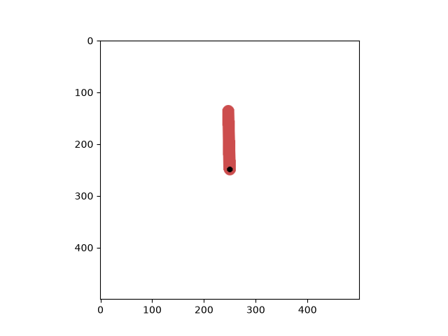
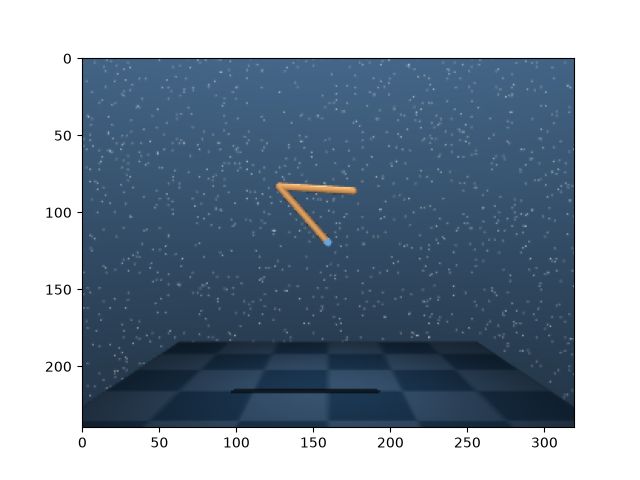
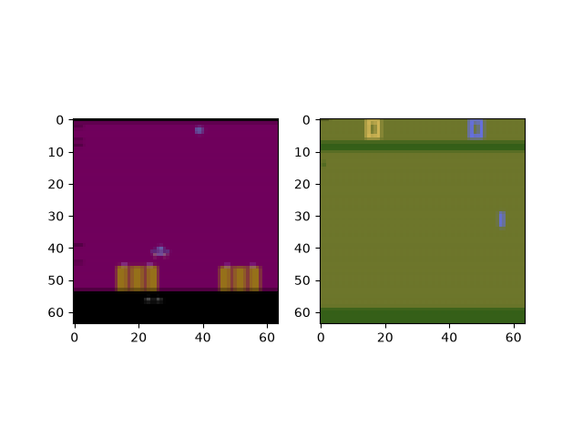
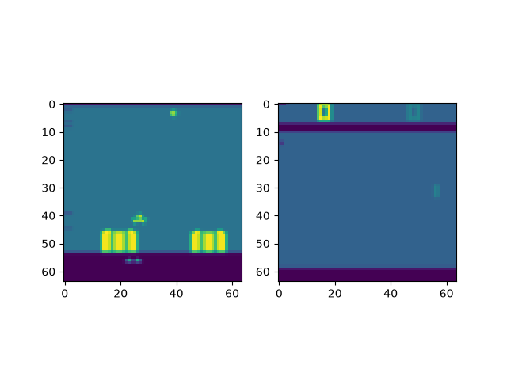

Note
Go to the end to download the full example code.
TorchRL envs#
Author: Vincent Moens
Environments play a crucial role in RL settings, often somewhat similar to datasets in supervised and unsupervised settings. The RL community has become quite familiar with OpenAI gym API which offers a flexible way of building environments, initializing them and interacting with them. However, many other libraries exist, and the way one interacts with them can be quite different from what is expected with gym.
Let us start by describing how TorchRL interacts with gym, which will serve as an introduction to other frameworks.
Gym environments#
To run this part of the tutorial, you will need to have gymnasium installed with ALE support. You can get this installed by installing the following packages:
$ pip install "gymnasium[atari]" pygame
To unify all frameworks, torchrl environments are built inside the
__init__ method with a private method called _build_env that
will pass the arguments and keyword arguments to the root library builder.
With gym, it means that building an environment is as easy as:
import ale_py # noqa: F401 - registers ALE environments with gymnasium
import torch
from matplotlib import pyplot as plt
from tensordict import TensorDict
The list of available environment can be accessed through this command:
list(GymEnv.available_envs)[:10]
['ALE/Adventure-v5', 'ALE/AirRaid-v5', 'ALE/Alien-v5', 'ALE/Amidar-v5', 'ALE/Assault-v5', 'ALE/Asterix-v5', 'ALE/Asteroids-v5', 'ALE/Atlantis-v5', 'ALE/Atlantis2-v5', 'ALE/Backgammon-v5']
Env Specs#
Like other frameworks, TorchRL envs have attributes that indicate what
space is for the observations, action, done and reward. Because it often happens
that more than one observation is retrieved, we expect the observation spec
to be of type Composite.
Reward and action do not have this restriction:
print("Env observation_spec: \n", env.observation_spec)
print("Env action_spec: \n", env.action_spec)
print("Env reward_spec: \n", env.reward_spec)
Env observation_spec:
Composite(
observation: BoundedContinuous(
shape=torch.Size([3]),
space=ContinuousBox(
low=Tensor(shape=torch.Size([3]), device=cpu, dtype=torch.float32, contiguous=True),
high=Tensor(shape=torch.Size([3]), device=cpu, dtype=torch.float32, contiguous=True)),
device=cpu,
dtype=torch.float32,
domain=continuous),
device=None,
shape=torch.Size([]),
data_cls=None)
Env action_spec:
BoundedContinuous(
shape=torch.Size([1]),
space=ContinuousBox(
low=Tensor(shape=torch.Size([1]), device=cpu, dtype=torch.float32, contiguous=True),
high=Tensor(shape=torch.Size([1]), device=cpu, dtype=torch.float32, contiguous=True)),
device=cpu,
dtype=torch.float32,
domain=continuous)
Env reward_spec:
UnboundedContinuous(
shape=torch.Size([1]),
space=ContinuousBox(
low=Tensor(shape=torch.Size([1]), device=cpu, dtype=torch.float32, contiguous=True),
high=Tensor(shape=torch.Size([1]), device=cpu, dtype=torch.float32, contiguous=True)),
device=cpu,
dtype=torch.float32,
domain=continuous)
Those spec come with a series of useful tools: one can assert whether a sample is in the defined space. We can also use some heuristic to project a sample in the space if it is out of space, and generate random (possibly uniformly distributed) numbers in that space:
action = torch.ones(1) * 3
print("action is in bounds?\n", bool(env.action_spec.is_in(action)))
print("projected action: \n", env.action_spec.project(action))
action is in bounds?
False
projected action:
tensor([2.])
print("random action: \n", env.action_spec.rand())
random action:
tensor([-0.1639])
Out of these specs, the done_spec deserves a special attention. In TorchRL,
all environments write end-of-trajectory signals of at least two types:
"terminated" (indicating that the Markov Decision Process has reached
a final state - the __episode__ is finished) and "done", indicating that
this is the last step of a __trajectory__ (but not necessarily the end of
the task). In general, a "done" entry that is True when a "terminal"
is False is caused by a "truncated" signal. Gym environments account for
these three signals:
print(env.done_spec)
Composite(
done: Categorical(
shape=torch.Size([1]),
space=CategoricalBox(n=2),
device=cpu,
dtype=torch.bool,
domain=discrete),
terminated: Categorical(
shape=torch.Size([1]),
space=CategoricalBox(n=2),
device=cpu,
dtype=torch.bool,
domain=discrete),
truncated: Categorical(
shape=torch.Size([1]),
space=CategoricalBox(n=2),
device=cpu,
dtype=torch.bool,
domain=discrete),
device=None,
shape=torch.Size([]),
data_cls=None)
Envs are also packed with an env.state_spec attribute of type
Composite which contains all the specs that are inputs to the env
but are not the action.
For stateful
envs (e.g. gym) this will be void most of the time.
With stateless environments
(e.g. Brax) this should also include a representation of the previous state,
or any other input to the environment (including inputs at reset time).
Seeding, resetting and steps#
The basic operations on an environment are (1) set_seed, (2) reset
and (3) step.
Let’s see how these methods work with TorchRL:
torch.manual_seed(0) # make sure that all torch code is also reproductible
env.set_seed(0)
reset_data = env.reset()
print("reset data", reset_data)
reset data TensorDict(
fields={
done: Tensor(shape=torch.Size([1]), device=cpu, dtype=torch.bool, is_shared=False),
observation: Tensor(shape=torch.Size([3]), device=cpu, dtype=torch.float32, is_shared=False),
terminated: Tensor(shape=torch.Size([1]), device=cpu, dtype=torch.bool, is_shared=False),
truncated: Tensor(shape=torch.Size([1]), device=cpu, dtype=torch.bool, is_shared=False)},
batch_size=torch.Size([]),
device=None,
is_shared=False)
We can now execute a step in the environment. Since we don’t have a policy, we can just generate a random action:
policy = TensorDictModule(env.action_spec.rand, in_keys=[], out_keys=["action"])
policy(reset_data)
tensordict_out = env.step(reset_data)
By default, the tensordict returned by step is the same as the input…
assert tensordict_out is reset_data
… but with new keys
TensorDict(
fields={
action: Tensor(shape=torch.Size([1]), device=cpu, dtype=torch.float32, is_shared=False),
done: Tensor(shape=torch.Size([1]), device=cpu, dtype=torch.bool, is_shared=False),
next: TensorDict(
fields={
done: Tensor(shape=torch.Size([1]), device=cpu, dtype=torch.bool, is_shared=False),
observation: Tensor(shape=torch.Size([3]), device=cpu, dtype=torch.float32, is_shared=False),
reward: Tensor(shape=torch.Size([1]), device=cpu, dtype=torch.float32, is_shared=False),
terminated: Tensor(shape=torch.Size([1]), device=cpu, dtype=torch.bool, is_shared=False),
truncated: Tensor(shape=torch.Size([1]), device=cpu, dtype=torch.bool, is_shared=False)},
batch_size=torch.Size([]),
device=None,
is_shared=False),
observation: Tensor(shape=torch.Size([3]), device=cpu, dtype=torch.float32, is_shared=False),
terminated: Tensor(shape=torch.Size([1]), device=cpu, dtype=torch.bool, is_shared=False),
truncated: Tensor(shape=torch.Size([1]), device=cpu, dtype=torch.bool, is_shared=False)},
batch_size=torch.Size([]),
device=None,
is_shared=False)
What we just did (a random step using action_spec.rand()) can also be
done via the simple shortcut.
env.rand_step()
TensorDict(
fields={
action: Tensor(shape=torch.Size([1]), device=cpu, dtype=torch.float32, is_shared=False),
next: TensorDict(
fields={
done: Tensor(shape=torch.Size([1]), device=cpu, dtype=torch.bool, is_shared=False),
observation: Tensor(shape=torch.Size([3]), device=cpu, dtype=torch.float32, is_shared=False),
reward: Tensor(shape=torch.Size([1]), device=cpu, dtype=torch.float32, is_shared=False),
terminated: Tensor(shape=torch.Size([1]), device=cpu, dtype=torch.bool, is_shared=False),
truncated: Tensor(shape=torch.Size([1]), device=cpu, dtype=torch.bool, is_shared=False)},
batch_size=torch.Size([]),
device=None,
is_shared=False)},
batch_size=torch.Size([]),
device=None,
is_shared=False)
The new key ("next", "observation") (as all keys under the "next"
tensordict) have a special role in TorchRL: they indicate that they come
after the key with the same name but without the prefix.
We provide a function step_mdp that executes a step in the tensordict:
it returns a new tensordict updated such that t < -t’:
from torchrl.envs.utils import step_mdp
tensordict_out.set("some other key", torch.randn(1))
tensordict_tprime = step_mdp(tensordict_out)
print(tensordict_tprime)
print(
(
tensordict_tprime.get("observation")
== tensordict_out.get(("next", "observation"))
).all()
)
TensorDict(
fields={
done: Tensor(shape=torch.Size([1]), device=cpu, dtype=torch.bool, is_shared=False),
observation: Tensor(shape=torch.Size([3]), device=cpu, dtype=torch.float32, is_shared=False),
some other key: Tensor(shape=torch.Size([1]), device=cpu, dtype=torch.float32, is_shared=False),
terminated: Tensor(shape=torch.Size([1]), device=cpu, dtype=torch.bool, is_shared=False),
truncated: Tensor(shape=torch.Size([1]), device=cpu, dtype=torch.bool, is_shared=False)},
batch_size=torch.Size([]),
device=None,
is_shared=False)
tensor(True)
We can observe that step_mdp has removed all the time-dependent
key-value pairs, but not "some other key". Also, the new
observation matches the previous one.
Finally, note that the env.reset method also accepts a tensordict to update:
data = TensorDict()
assert env.reset(data) is data
data
TensorDict(
fields={
done: Tensor(shape=torch.Size([1]), device=cpu, dtype=torch.bool, is_shared=False),
observation: Tensor(shape=torch.Size([3]), device=cpu, dtype=torch.float32, is_shared=False),
terminated: Tensor(shape=torch.Size([1]), device=cpu, dtype=torch.bool, is_shared=False),
truncated: Tensor(shape=torch.Size([1]), device=cpu, dtype=torch.bool, is_shared=False)},
batch_size=torch.Size([]),
device=None,
is_shared=False)
Rollouts#
The generic environment class provided by TorchRL allows you to run rollouts easily for a given number of steps:
tensordict_rollout = env.rollout(max_steps=20, policy=policy)
print(tensordict_rollout)
TensorDict(
fields={
action: Tensor(shape=torch.Size([20, 1]), device=cpu, dtype=torch.float32, is_shared=False),
done: Tensor(shape=torch.Size([20, 1]), device=cpu, dtype=torch.bool, is_shared=False),
next: TensorDict(
fields={
done: Tensor(shape=torch.Size([20, 1]), device=cpu, dtype=torch.bool, is_shared=False),
observation: Tensor(shape=torch.Size([20, 3]), device=cpu, dtype=torch.float32, is_shared=False),
reward: Tensor(shape=torch.Size([20, 1]), device=cpu, dtype=torch.float32, is_shared=False),
terminated: Tensor(shape=torch.Size([20, 1]), device=cpu, dtype=torch.bool, is_shared=False),
truncated: Tensor(shape=torch.Size([20, 1]), device=cpu, dtype=torch.bool, is_shared=False)},
batch_size=torch.Size([20]),
device=None,
is_shared=False),
observation: Tensor(shape=torch.Size([20, 3]), device=cpu, dtype=torch.float32, is_shared=False),
terminated: Tensor(shape=torch.Size([20, 1]), device=cpu, dtype=torch.bool, is_shared=False),
truncated: Tensor(shape=torch.Size([20, 1]), device=cpu, dtype=torch.bool, is_shared=False)},
batch_size=torch.Size([20]),
device=None,
is_shared=False)
The resulting tensordict has a batch_size of [20], which is the
length of the trajectory. We can check that the observation match their
next value:
(
tensordict_rollout.get("observation")[1:]
== tensordict_rollout.get(("next", "observation"))[:-1]
).all()
tensor(True)
frame_skip#
In some instances, it is useful to use a frame_skip argument to use the
same action for several consecutive frames.
The resulting tensordict will contain only the last frame observed in the sequence, but the rewards will be summed over the number of frames.
If the environment reaches a done state during this process, it’ll stop and return the result of the truncated chain.
env = GymEnv("Pendulum-v1", frame_skip=4)
env.reset()
TensorDict(
fields={
done: Tensor(shape=torch.Size([1]), device=cpu, dtype=torch.bool, is_shared=False),
observation: Tensor(shape=torch.Size([3]), device=cpu, dtype=torch.float32, is_shared=False),
terminated: Tensor(shape=torch.Size([1]), device=cpu, dtype=torch.bool, is_shared=False),
truncated: Tensor(shape=torch.Size([1]), device=cpu, dtype=torch.bool, is_shared=False)},
batch_size=torch.Size([]),
device=None,
is_shared=False)
Rendering#
Rendering plays an important role in many RL settings, and this is why the
generic environment class from torchrl provides a from_pixels keyword
argument that allows the user to quickly ask for image-based environments:
env = GymEnv("Pendulum-v1", from_pixels=True)
data = env.reset()
env.close()
plt.imshow(data.get("pixels").numpy())

<matplotlib.image.AxesImage object at 0x7f2bb1460c50>
Let’s have a look at what the tensordict contains:
TensorDict(
fields={
done: Tensor(shape=torch.Size([1]), device=cpu, dtype=torch.bool, is_shared=False),
pixels: Tensor(shape=torch.Size([500, 500, 3]), device=cpu, dtype=torch.uint8, is_shared=False),
terminated: Tensor(shape=torch.Size([1]), device=cpu, dtype=torch.bool, is_shared=False),
truncated: Tensor(shape=torch.Size([1]), device=cpu, dtype=torch.bool, is_shared=False)},
batch_size=torch.Size([]),
device=None,
is_shared=False)
We still have a "state" that describes what "observation" used to
describe in the previous case (the naming difference comes from the fact that
gym now returns a dictionary and TorchRL gets the names from the dictionary
if it exists, otherwise it names the step output "observation": in a
few words, this is due to inconsistencies in the object type returned by
gym environment step method).
One can also discard this supplementary output by asking for the pixels only:
env = GymEnv("Pendulum-v1", from_pixels=True, pixels_only=True)
env.reset()
env.close()
Some environments only come in image-based format
env = GymEnv("ALE/Pong-v5")
print("from pixels: ", env.from_pixels)
print("data: ", env.reset())
env.close()
from pixels: True
data: TensorDict(
fields={
done: Tensor(shape=torch.Size([1]), device=cpu, dtype=torch.bool, is_shared=False),
pixels: Tensor(shape=torch.Size([210, 160, 3]), device=cpu, dtype=torch.uint8, is_shared=False),
terminated: Tensor(shape=torch.Size([1]), device=cpu, dtype=torch.bool, is_shared=False),
truncated: Tensor(shape=torch.Size([1]), device=cpu, dtype=torch.bool, is_shared=False)},
batch_size=torch.Size([]),
device=None,
is_shared=False)
DeepMind Control environments#
- To run this part of the tutorial, make sure you have installed dm_control:
$ pip install dm_control
We also provide a wrapper for DM Control suite. Again, building an
environment is easy: first let’s look at what environments can be accessed.
The available_envs now returns a dict of envs and possible tasks:
from matplotlib import pyplot as plt
from torchrl.envs.libs.dm_control import DMControlEnv
DMControlEnv.available_envs
[('acrobot', ['swingup', 'swingup_sparse']), ('ball_in_cup', ['catch']), ('cartpole', ['balance', 'balance_sparse', 'swingup', 'swingup_sparse', 'three_poles', 'two_poles']), ('cheetah', ['run']), ('finger', ['spin', 'turn_easy', 'turn_hard']), ('fish', ['upright', 'swim']), ('hopper', ['stand', 'hop']), ('humanoid', ['stand', 'walk', 'run', 'run_pure_state']), ('manipulator', ['bring_ball', 'bring_peg', 'insert_ball', 'insert_peg']), ('pendulum', ['swingup']), ('point_mass', ['easy', 'hard']), ('reacher', ['easy', 'hard']), ('swimmer', ['swimmer6', 'swimmer15']), ('walker', ['stand', 'walk', 'run']), ('dog', ['fetch', 'run', 'stand', 'trot', 'walk']), ('humanoid_CMU', ['run', 'stand', 'walk']), ('lqr', ['lqr_2_1', 'lqr_6_2']), ('quadruped', ['escape', 'fetch', 'run', 'walk']), ('stacker', ['stack_2', 'stack_4'])]
env = DMControlEnv("acrobot", "swingup")
data = env.reset()
print("result of reset: ", data)
env.close()
result of reset: TensorDict(
fields={
done: Tensor(shape=torch.Size([1]), device=cpu, dtype=torch.bool, is_shared=False),
orientations: Tensor(shape=torch.Size([4]), device=cpu, dtype=torch.float64, is_shared=False),
terminated: Tensor(shape=torch.Size([1]), device=cpu, dtype=torch.bool, is_shared=False),
truncated: Tensor(shape=torch.Size([1]), device=cpu, dtype=torch.bool, is_shared=False),
velocity: Tensor(shape=torch.Size([2]), device=cpu, dtype=torch.float64, is_shared=False)},
batch_size=torch.Size([]),
device=None,
is_shared=False)
Of course we can also use pixel-based environments:
env = DMControlEnv("acrobot", "swingup", from_pixels=True, pixels_only=True)
data = env.reset()
print("result of reset: ", data)
plt.imshow(data.get("pixels").numpy())
env.close()

result of reset: TensorDict(
fields={
done: Tensor(shape=torch.Size([1]), device=cpu, dtype=torch.bool, is_shared=False),
pixels: Tensor(shape=torch.Size([240, 320, 3]), device=cpu, dtype=torch.uint8, is_shared=False),
terminated: Tensor(shape=torch.Size([1]), device=cpu, dtype=torch.bool, is_shared=False),
truncated: Tensor(shape=torch.Size([1]), device=cpu, dtype=torch.bool, is_shared=False)},
batch_size=torch.Size([]),
device=None,
is_shared=False)
Transforming envs#
It is common to pre-process the output of an environment before having it read by the policy or stored in a buffer.
- In many instances, the RL community has adopted a wrapping scheme of the type
$ env_transformed = wrapper1(wrapper2(env))
to transform environments. This has numerous advantages: it makes accessing
the environment specs obvious (the outer wrapper is the source of truth for
the external world), and it makes it easy to interact with vectorized
environment. However it also makes it hard to access inner environments:
say one wants to remove a wrapper (e.g. wrapper2) from the chain,
this operation requires us to collect
$ env0 = env.env.env
$ env_transformed_bis = wrapper1(env0)
TorchRL takes the stance of using sequences of transforms instead, as it is
done in other pytorch domain libraries (e.g. torchvision). This
approach is also similar to the way distributions are transformed in
torch.distribution, where a TransformedDistribution object is
built around a base_dist distribution and (a sequence of) transforms.
from torchrl.envs.transforms import ToTensorImage, TransformedEnv
# ToTensorImage transforms a numpy-like image into a tensor one,
env = DMControlEnv("acrobot", "swingup", from_pixels=True, pixels_only=True)
print("reset before transform: ", env.reset())
env = TransformedEnv(env, ToTensorImage())
print("reset after transform: ", env.reset())
env.close()
reset before transform: TensorDict(
fields={
done: Tensor(shape=torch.Size([1]), device=cpu, dtype=torch.bool, is_shared=False),
pixels: Tensor(shape=torch.Size([240, 320, 3]), device=cpu, dtype=torch.uint8, is_shared=False),
terminated: Tensor(shape=torch.Size([1]), device=cpu, dtype=torch.bool, is_shared=False),
truncated: Tensor(shape=torch.Size([1]), device=cpu, dtype=torch.bool, is_shared=False)},
batch_size=torch.Size([]),
device=None,
is_shared=False)
reset after transform: TensorDict(
fields={
done: Tensor(shape=torch.Size([1]), device=cpu, dtype=torch.bool, is_shared=False),
pixels: Tensor(shape=torch.Size([3, 240, 320]), device=cpu, dtype=torch.float32, is_shared=False),
terminated: Tensor(shape=torch.Size([1]), device=cpu, dtype=torch.bool, is_shared=False),
truncated: Tensor(shape=torch.Size([1]), device=cpu, dtype=torch.bool, is_shared=False)},
batch_size=torch.Size([]),
device=None,
is_shared=False)
To compose transforms, simply use the Compose class:
from torchrl.envs.transforms import Compose, Resize
env = DMControlEnv("acrobot", "swingup", from_pixels=True, pixels_only=True)
env = TransformedEnv(env, Compose(ToTensorImage(), Resize(32, 32)))
env.reset()
TensorDict(
fields={
done: Tensor(shape=torch.Size([1]), device=cpu, dtype=torch.bool, is_shared=False),
pixels: Tensor(shape=torch.Size([3, 32, 32]), device=cpu, dtype=torch.float32, is_shared=False),
terminated: Tensor(shape=torch.Size([1]), device=cpu, dtype=torch.bool, is_shared=False),
truncated: Tensor(shape=torch.Size([1]), device=cpu, dtype=torch.bool, is_shared=False)},
batch_size=torch.Size([]),
device=None,
is_shared=False)
Transforms can also be added one at a time:
TensorDict(
fields={
done: Tensor(shape=torch.Size([1]), device=cpu, dtype=torch.bool, is_shared=False),
pixels: Tensor(shape=torch.Size([1, 32, 32]), device=cpu, dtype=torch.float32, is_shared=False),
terminated: Tensor(shape=torch.Size([1]), device=cpu, dtype=torch.bool, is_shared=False),
truncated: Tensor(shape=torch.Size([1]), device=cpu, dtype=torch.bool, is_shared=False)},
batch_size=torch.Size([]),
device=None,
is_shared=False)
As expected, the metadata get updated too:
print("original obs spec: ", env.base_env.observation_spec)
print("current obs spec: ", env.observation_spec)
original obs spec: Composite(
pixels: UnboundedDiscrete(
shape=torch.Size([240, 320, 3]),
space=ContinuousBox(
low=Tensor(shape=torch.Size([240, 320, 3]), device=cpu, dtype=torch.uint8, contiguous=True),
high=Tensor(shape=torch.Size([240, 320, 3]), device=cpu, dtype=torch.uint8, contiguous=True)),
device=cpu,
dtype=torch.uint8,
domain=discrete),
device=None,
shape=torch.Size([]),
data_cls=None)
current obs spec: Composite(
pixels: UnboundedContinuous(
shape=torch.Size([1, 32, 32]),
space=ContinuousBox(
low=Tensor(shape=torch.Size([1, 32, 32]), device=cpu, dtype=torch.float32, contiguous=True),
high=Tensor(shape=torch.Size([1, 32, 32]), device=cpu, dtype=torch.float32, contiguous=True)),
device=cpu,
dtype=torch.float32,
domain=continuous),
device=None,
shape=torch.Size([]),
data_cls=None)
We can also concatenate tensors if needed:
from torchrl.envs.transforms import CatTensors
env = DMControlEnv("acrobot", "swingup")
print("keys before concat: ", env.reset())
env = TransformedEnv(
env,
CatTensors(in_keys=["orientations", "velocity"], out_key="observation"),
)
print("keys after concat: ", env.reset())
keys before concat: TensorDict(
fields={
done: Tensor(shape=torch.Size([1]), device=cpu, dtype=torch.bool, is_shared=False),
orientations: Tensor(shape=torch.Size([4]), device=cpu, dtype=torch.float64, is_shared=False),
terminated: Tensor(shape=torch.Size([1]), device=cpu, dtype=torch.bool, is_shared=False),
truncated: Tensor(shape=torch.Size([1]), device=cpu, dtype=torch.bool, is_shared=False),
velocity: Tensor(shape=torch.Size([2]), device=cpu, dtype=torch.float64, is_shared=False)},
batch_size=torch.Size([]),
device=None,
is_shared=False)
keys after concat: TensorDict(
fields={
done: Tensor(shape=torch.Size([1]), device=cpu, dtype=torch.bool, is_shared=False),
observation: Tensor(shape=torch.Size([6]), device=cpu, dtype=torch.float64, is_shared=False),
terminated: Tensor(shape=torch.Size([1]), device=cpu, dtype=torch.bool, is_shared=False),
truncated: Tensor(shape=torch.Size([1]), device=cpu, dtype=torch.bool, is_shared=False)},
batch_size=torch.Size([]),
device=None,
is_shared=False)
This feature makes it easy to mofidy the sets of transforms applied to an
environment input and output. In fact, transforms are run both before and
after a step is executed: for the pre-step pass, the in_keys_inv list of
keys will be passed to the _inv_apply_transform method. An example of
such a transform would be to transform floating-point actions (output from
a neural network) to the double dtype (requires by the wrapped environment).
After the step is executed, the _apply_transform method will be
executed on the keys indicated by the in_keys list of keys.
Another interesting feature of the environment transforms is that they
allow the user to retrieve the equivalent of env.env in the wrapped
case, or in other words the parent environment. The parent environment can
be retrieved by calling transform.parent: the returned environment
will consist in a TransformedEnvironment with all the transforms up to
(but not including) the current transform. This is be used for instance in
the NoopResetEnv case, which when reset executes the following steps:
resets the parent environment before executing a certain number of steps
at random in that environment.
env = DMControlEnv("acrobot", "swingup")
env = TransformedEnv(env)
env.append_transform(
CatTensors(in_keys=["orientations", "velocity"], out_key="observation")
)
env.append_transform(GrayScale())
print("env: \n", env)
print("GrayScale transform parent env: \n", env.transform[1].parent)
print("CatTensors transform parent env: \n", env.transform[0].parent)
env:
TransformedEnv(
env=DMControlEnv(env=acrobot, task=swingup, batch_size=torch.Size([])),
transform=Compose(
CatTensors(in_keys=['orientations', 'velocity'], out_key=observation),
GrayScale(keys=['pixels'])))
GrayScale transform parent env:
TransformedEnv(
env=DMControlEnv(env=acrobot, task=swingup, batch_size=torch.Size([])),
transform=Compose(
CatTensors(in_keys=['orientations', 'velocity'], out_key=observation)))
CatTensors transform parent env:
TransformedEnv(
env=DMControlEnv(env=acrobot, task=swingup, batch_size=torch.Size([])),
transform=Compose())
Environment device#
Transforms can work on device, which can bring a significant speedup when
operations are moderately or highly computationally demanding. These include
ToTensorImage, Resize, GrayScale etc.
One could legitimately ask what that implies on the wrapped environment side. Very little for regular environments: the operations will still happen on the device where they’re supposed to happen. The environment device attribute in torchrl indicates on which device is the incoming data supposed to be and on which device the output data will be. Casting from and to that device is the responsibility of the torchrl environment class. The big advantage of storing data on GPU is (1) speedup of transforms as mentioned above and (2) sharing data amongst workers in multiprocessing settings.
from torchrl.envs.transforms import CatTensors, GrayScale, TransformedEnv
env = DMControlEnv("acrobot", "swingup")
env = TransformedEnv(env)
env.append_transform(
CatTensors(in_keys=["orientations", "velocity"], out_key="observation")
)
if torch.has_cuda and torch.cuda.device_count():
env.to("cuda:0")
env.reset()
Running environments in parallel#
TorchRL provides utilities to run environment in parallel. It is expected that the various environment read and return tensors of similar shapes and dtypes (but one could design masking functions to make this possible in case those tensors differ in shapes). Creating such environments is quite easy. Let us look at the simplest case:
from torchrl.envs import ParallelEnv
def env_make():
return GymEnv("Pendulum-v1")
parallel_env = ParallelEnv(
3, env_make, mp_start_method=mp_context
) # -> creates 3 envs in parallel
parallel_env = ParallelEnv(
3, [env_make, env_make, env_make], mp_start_method=mp_context
) # similar to the previous command
The SerialEnv class is similar to the ParallelEnv except for the
fact that environments are run sequentially. This is mostly useful for
debugging purposes.
ParallelEnv instances are created in lazy mode: the environment will
start running only when called. This allows us to move ParallelEnv
objects from process to process without worrying too much about running
processes. A ParallelEnv can be started by calling start, reset
or simply by calling step (if reset does not need to be called first).
parallel_env.reset()
TensorDict(
fields={
done: Tensor(shape=torch.Size([3, 1]), device=cpu, dtype=torch.bool, is_shared=False),
observation: Tensor(shape=torch.Size([3, 3]), device=cpu, dtype=torch.float32, is_shared=False),
terminated: Tensor(shape=torch.Size([3, 1]), device=cpu, dtype=torch.bool, is_shared=False),
truncated: Tensor(shape=torch.Size([3, 1]), device=cpu, dtype=torch.bool, is_shared=False)},
batch_size=torch.Size([3]),
device=None,
is_shared=False)
One can check that the parallel environment has the right batch size.
Conventionally, the first part of the batch_size indicates the batch,
the second the time frame. Let’s check that with the rollout method:
parallel_env.rollout(max_steps=20)
TensorDict(
fields={
action: Tensor(shape=torch.Size([3, 20, 1]), device=cpu, dtype=torch.float32, is_shared=False),
done: Tensor(shape=torch.Size([3, 20, 1]), device=cpu, dtype=torch.bool, is_shared=False),
next: TensorDict(
fields={
done: Tensor(shape=torch.Size([3, 20, 1]), device=cpu, dtype=torch.bool, is_shared=False),
observation: Tensor(shape=torch.Size([3, 20, 3]), device=cpu, dtype=torch.float32, is_shared=False),
reward: Tensor(shape=torch.Size([3, 20, 1]), device=cpu, dtype=torch.float32, is_shared=False),
terminated: Tensor(shape=torch.Size([3, 20, 1]), device=cpu, dtype=torch.bool, is_shared=False),
truncated: Tensor(shape=torch.Size([3, 20, 1]), device=cpu, dtype=torch.bool, is_shared=False)},
batch_size=torch.Size([3, 20]),
device=None,
is_shared=False),
observation: Tensor(shape=torch.Size([3, 20, 3]), device=cpu, dtype=torch.float32, is_shared=False),
terminated: Tensor(shape=torch.Size([3, 20, 1]), device=cpu, dtype=torch.bool, is_shared=False),
truncated: Tensor(shape=torch.Size([3, 20, 1]), device=cpu, dtype=torch.bool, is_shared=False)},
batch_size=torch.Size([3, 20]),
device=None,
is_shared=False)
Closing parallel environments#
Important: before closing a program, it is important to close the
parallel environment. In general, even with regular environments, it is good
practice to close a function with a call to close. In some instances,
TorchRL will throw an error if this is not done (and often it will be at the
end of a program, when the environment gets out of scope!)
parallel_env.close()
Seeding#
When seeding a parallel environment, the difficulty we face is that we don’t
want to provide the same seed to all environments. The heuristic used by
TorchRL is that we produce a deterministic chain of seeds given the input
seed in a - so to say - Markovian way, such that it can be reconstructed
from any of its elements. All set_seed methods will return the next seed to
be used, such that one can easily keep the chain going given the last seed.
This is useful when several collectors all contain a ParallelEnv
instance and we want each of the sub-sub-environments to have a different seed.
out_seed = parallel_env.set_seed(10)
print(out_seed)
del parallel_env
3288080526
Accessing environment attributes#
It sometimes occurs that a wrapped environment has an attribute that is of interest. First, note that TorchRL environment wrapper constrains the toolings to access this attribute. Here’s an example:
from time import sleep
from uuid import uuid1
def env_make():
env = GymEnv("Pendulum-v1")
env._env.foo = f"bar_{uuid1()}"
env._env.get_something = lambda r: r + 1
return env
env = env_make()
# Goes through env._env
env.foo
'bar_bd9cd670-663c-11f1-be78-0242ac110002'
parallel_env = ParallelEnv(
3, env_make, mp_start_method=mp_context
) # -> creates 3 envs in parallel
# env has not been started --> error:
try:
parallel_env.foo
except RuntimeError:
print("Aargh what did I do!")
sleep(2) # make sure we don't get ahead of ourselves
Aargh what did I do!
if parallel_env.is_closed:
parallel_env.start()
foo_list = parallel_env.foo
foo_list # needs to be instantiated, for instance using list
<torchrl.envs.batched_envs._dispatch_caller_parallel object at 0x7f2bafe23f10>
list(foo_list)
['bar_bf32bb6c-663c-11f1-9400-0242ac110002', 'bar_bf321978-663c-11f1-9ea5-0242ac110002', 'bar_bf2d0280-663c-11f1-8cb3-0242ac110002']
Similarly, methods can also be accessed:
something = parallel_env.get_something(0)
print(something)
[1, 1, 1]
parallel_env.close()
del parallel_env
kwargs for parallel environments#
One may want to provide kwargs to the various environments. This can achieved either at construction time or afterwards:
from torchrl.envs import ParallelEnv
def env_make(env_name):
env = TransformedEnv(
GymEnv(env_name, from_pixels=True, pixels_only=True),
Compose(ToTensorImage(), Resize(64, 64)),
)
return env
parallel_env = ParallelEnv(
2,
[env_make, env_make],
create_env_kwargs=[{"env_name": "ALE/AirRaid-v5"}, {"env_name": "ALE/Pong-v5"}],
mp_start_method=mp_context,
)
data = parallel_env.reset()
plt.figure()
plt.subplot(121)
plt.imshow(data[0].get("pixels").permute(1, 2, 0).numpy())
plt.subplot(122)
plt.imshow(data[1].get("pixels").permute(1, 2, 0).numpy())
parallel_env.close()
del parallel_env
from matplotlib import pyplot as plt

Transforming parallel environments#
There are two equivalent ways of transforming parallel environments: in each process separately, or on the main process. It is even possible to do both. One can therefore think carefully about the transform design to leverage the device capabilities (e.g. transforms on cuda devices) and vectorizing operations on the main process if possible.
from torchrl.envs import (
Compose,
GrayScale,
ParallelEnv,
Resize,
ToTensorImage,
TransformedEnv,
)
def env_make(env_name):
env = TransformedEnv(
GymEnv(env_name, from_pixels=True, pixels_only=True),
Compose(ToTensorImage(), Resize(64, 64)),
) # transforms on remote processes
return env
parallel_env = ParallelEnv(
2,
[env_make, env_make],
create_env_kwargs=[{"env_name": "ALE/AirRaid-v5"}, {"env_name": "ALE/Pong-v5"}],
mp_start_method=mp_context,
)
parallel_env = TransformedEnv(parallel_env, GrayScale()) # transforms on main process
data = parallel_env.reset()
print("grayscale data: ", data)
plt.figure()
plt.subplot(121)
plt.imshow(data[0].get("pixels").permute(1, 2, 0).numpy())
plt.subplot(122)
plt.imshow(data[1].get("pixels").permute(1, 2, 0).numpy())
parallel_env.close()
del parallel_env

grayscale data: TensorDict(
fields={
done: Tensor(shape=torch.Size([2, 1]), device=cpu, dtype=torch.bool, is_shared=False),
pixels: Tensor(shape=torch.Size([2, 1, 64, 64]), device=cpu, dtype=torch.float32, is_shared=False),
terminated: Tensor(shape=torch.Size([2, 1]), device=cpu, dtype=torch.bool, is_shared=False),
truncated: Tensor(shape=torch.Size([2, 1]), device=cpu, dtype=torch.bool, is_shared=False)},
batch_size=torch.Size([2]),
device=None,
is_shared=False)
VecNorm#
In RL, we commonly face the problem of normalizing data before inputting them into a model. Sometimes, we can get a good approximation of the normalizing statistics from data gathered in the environment with, say, a random policy (or demonstrations). It might, however, be advisable to normalize the data “on-the-fly”, updating the normalizing constants progressively to what has been observed so far. This is particularly useful when we expect the normalizing statistics to change following changes in performance in the task, or when the environment is evolving due to external factors.
Caution: this feature should be used with caution with off-policy learning, as old data will be “deprecated” due to its normalization with previously valid normalizing statistics. In on-policy settings too, this feature makes learning non-steady and may have unexpected effects. One would therefore advice users to rely on this feature with caution and compare it with data normalizing given a fixed version of the normalizing constants.
In regular setting, using VecNorm is quite easy:
from torchrl.envs.libs.gym import GymEnv
from torchrl.envs.transforms import TransformedEnv, VecNorm
env = TransformedEnv(GymEnv("Pendulum-v1"), VecNorm())
data = env.rollout(max_steps=100)
print("mean: :", data.get("observation").mean(0)) # Approx 0
print("std: :", data.get("observation").std(0)) # Approx 1
mean: : tensor([1.0044, 0.0070, 0.3424])
std: : tensor([1.5059, 1.7615, 1.5309])
In parallel envs things are slightly more complicated, as we need to
share the running statistics amongst the processes. We created a class
EnvCreator that is responsible for looking at an environment creation
method, retrieving tensordicts to share amongst processes in the environment
class, and pointing each process to the right common, shared data
once created:
from torchrl.envs import EnvCreator, ParallelEnv
from torchrl.envs.libs.gym import GymEnv
from torchrl.envs.transforms import TransformedEnv, VecNorm
make_env = EnvCreator(lambda: TransformedEnv(GymEnv("CartPole-v1"), VecNorm(decay=1.0)))
env = ParallelEnv(3, make_env, mp_start_method=mp_context)
print("env state dict:")
sd = TensorDict(make_env.state_dict())
print(sd)
# Zeroes all tensors
sd *= 0
data = env.rollout(max_steps=5)
print("data: ", data)
print("mean: :", data.get("observation").view(-1, 3).mean(0)) # Approx 0
print("std: :", data.get("observation").view(-1, 3).std(0)) # Approx 1
env state dict:
TensorDict(
fields={
_extra_state: TensorDict(
fields={
observation_count: Tensor(shape=torch.Size([1]), device=cpu, dtype=torch.float32, is_shared=True),
observation_ssq: Tensor(shape=torch.Size([4]), device=cpu, dtype=torch.float32, is_shared=True),
observation_sum: Tensor(shape=torch.Size([4]), device=cpu, dtype=torch.float32, is_shared=True),
reward_count: Tensor(shape=torch.Size([1]), device=cpu, dtype=torch.float32, is_shared=True),
reward_ssq: Tensor(shape=torch.Size([1]), device=cpu, dtype=torch.float32, is_shared=True),
reward_sum: Tensor(shape=torch.Size([1]), device=cpu, dtype=torch.float32, is_shared=True)},
batch_size=torch.Size([]),
device=None,
is_shared=False)},
batch_size=torch.Size([]),
device=None,
is_shared=False)
data: TensorDict(
fields={
action: Tensor(shape=torch.Size([3, 5, 2]), device=cpu, dtype=torch.int64, is_shared=False),
done: Tensor(shape=torch.Size([3, 5, 1]), device=cpu, dtype=torch.bool, is_shared=False),
next: TensorDict(
fields={
done: Tensor(shape=torch.Size([3, 5, 1]), device=cpu, dtype=torch.bool, is_shared=False),
observation: Tensor(shape=torch.Size([3, 5, 4]), device=cpu, dtype=torch.float32, is_shared=False),
reward: Tensor(shape=torch.Size([3, 5, 1]), device=cpu, dtype=torch.float32, is_shared=False),
terminated: Tensor(shape=torch.Size([3, 5, 1]), device=cpu, dtype=torch.bool, is_shared=False),
truncated: Tensor(shape=torch.Size([3, 5, 1]), device=cpu, dtype=torch.bool, is_shared=False)},
batch_size=torch.Size([3, 5]),
device=None,
is_shared=False),
observation: Tensor(shape=torch.Size([3, 5, 4]), device=cpu, dtype=torch.float32, is_shared=False),
terminated: Tensor(shape=torch.Size([3, 5, 1]), device=cpu, dtype=torch.bool, is_shared=False),
truncated: Tensor(shape=torch.Size([3, 5, 1]), device=cpu, dtype=torch.bool, is_shared=False)},
batch_size=torch.Size([3, 5]),
device=None,
is_shared=False)
mean: : tensor([-0.0434, 0.3040, 0.0857])
std: : tensor([1.2659, 1.2033, 1.2889])
The count is slightly higher than the number of steps (since we
did not use any decay). The difference between the two is due to the fact
that ParallelEnv creates a dummy environment to initialize the shared
TensorDict that is used to collect data from the dispatched environments.
This small difference will usually be absored throughout training.
print(
"update counts: ",
make_env.state_dict()["_extra_state"]["observation_count"],
)
env.close()
del env
update counts: tensor([18.])
Total running time of the script: (0 minutes 25.673 seconds)